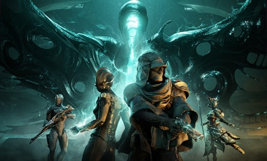
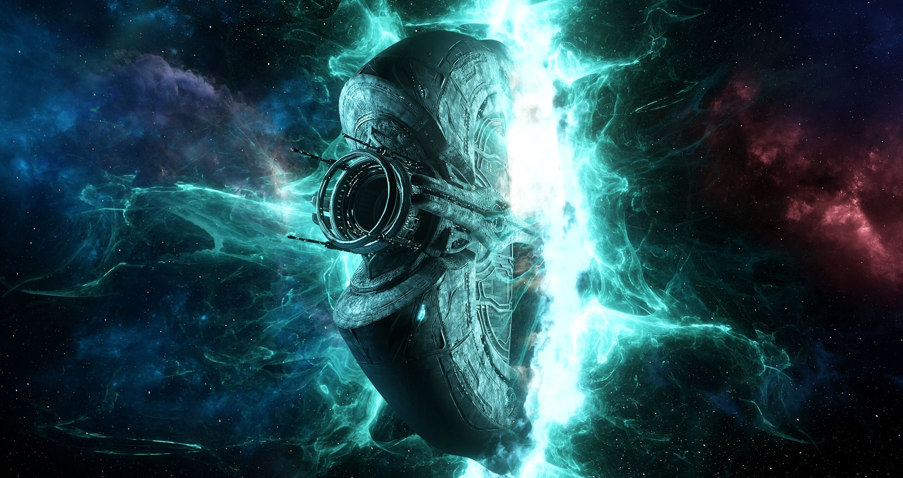
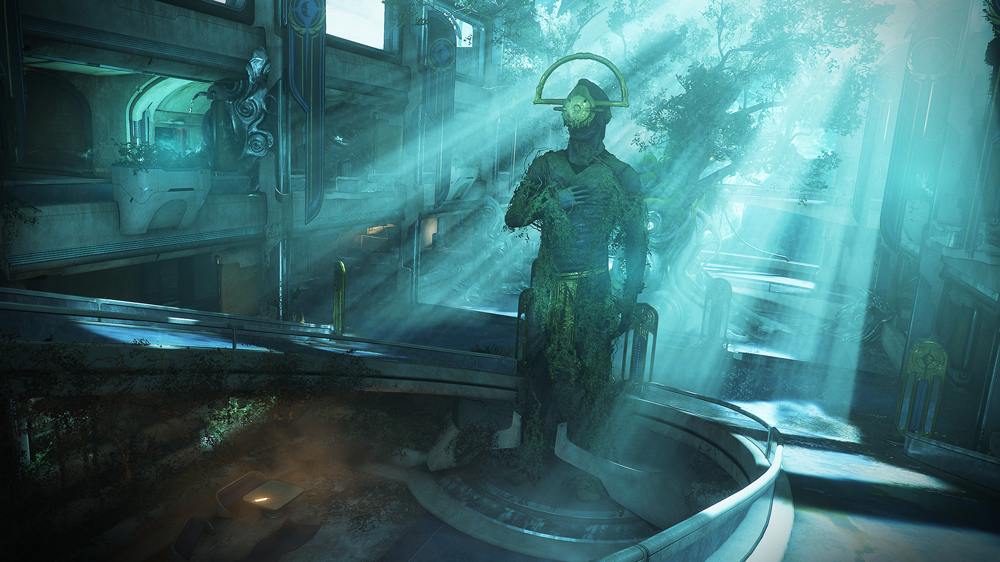

A colony ship previously stuck in the void and original home of the teno. This colony ship was one of the orikins first test of void travle to the tau system. The test failed causing the kids on board to gain the powers of the void. All the aldults died. When you enter the Zariman you will meet copies of some of the adults.


